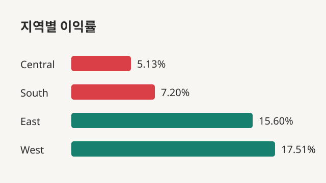

SKILLS
사용할 수 있는 기술
SQL
- SQLite에서 SELECT, WHERE, GROUP BY, 집계함수로 분석용 데이터 추출
- SQLD 취득
Python
- Pandas로 데이터 정제, 그룹별 집계, 이익률 같은 파생 지표 계산
- Matplotlib으로 막대·선 그래프 시각화
통계
- 상관분석으로 가설을 세우고 검증, 결과의 한계까지 해석
PROJECT
프로젝트

🛒 지역별 수익성 저하 원인 분석
Central·South의 낮은 이익률 원인을 SQL과 Pandas로 추적해, 할인율이 높을수록 이익률이 낮아지는 경향을 확인했습니다.
자세히 보기 →
🎮 Cookie Cats A/B 테스트 — 사용자 리텐션 분석
첫 게이트를 레벨 30에서 40으로 이동한 실험에서 1일·7일 리텐션을 비교하고, SRM과 통계 검정을 통해 결과의 신뢰성을 평가했습니다.
자세히 보기 →CERTIFICATIONS
자격증
SQLDSQL 개발자 · 2026.08
정보처리기사한국산업인력공단 · 2026
CONTACT